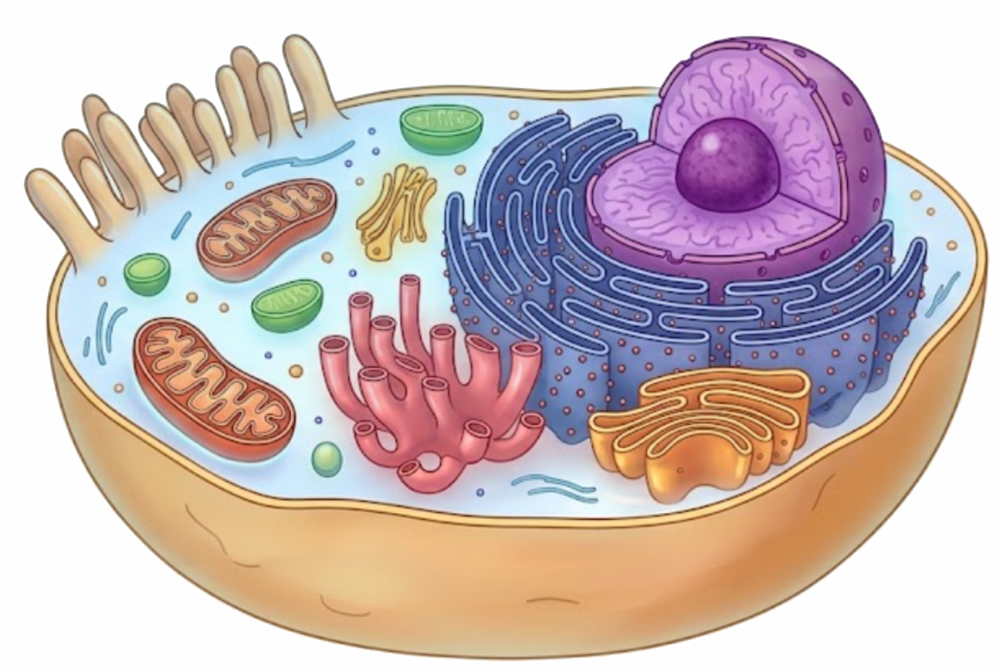

Click a structure on the animal or plant cell — see notes wording, how Paper 1A / 1B / CE mark it, and the usual traps. Prokaryote diagram coming later.
F.4 · Ch.2 cell · notes + exam drill
Click a structure absorptive animal cell — microvilli are folds of the membrane
Click a coloured organelle on the diagram, or use the chips. Amber outline = selected. Teaching art, not a TEM.

Prokaryote — under construction
Interactive diagram will be added in a later update.
Animal and plant cells are ready to explore.
Animal and plant diagrams are interactive. Prokaryote diagram is under construction.
Select a sub-cellular structure
Click any labelled part. The panel fills with the notes wording, how that part is examined, and the line that usually scores 0.
—
Structural features
Function — what to write in Paper 1B
How this is examined (Paper 1A / 1B / CE)
Where students lose marks
What the papers actually ask — not “list every organelle”
Paper 1A / CE MC: which structures are in both plant and animal cells; which plant cells have chloroplasts; cell wall fully permeable vs membrane differentially permeable; mature red blood cell has no nucleus; all flowering-plant cells have a cell wall (not membrane — mature xylem vessels are dead); prokaryote has wall + ribosome + membrane but not mitochondria.
Common 1A traps on this topic: cytoplasm does not “protect the nucleus”; peptide hormones are made at ribosomes, not the nucleolus; Na⁺ needs a protein path while alcohol crosses the bilayer; herbaceous support is turgor, not a rigid membrane; compare bacterium vs palisade by distinct nucleus, not “no wall”.
Paper 1B labelling: electron micrograph of a human cell — nucleus, ER, mitochondrion, Golgi. Spelling of the biological term is required.
Paper 1B “relative amounts”: a table of mitochondria / chloroplasts / ER in four cell types. Palisade mesophyll = chloroplasts; pancreatic / salivary = rough ER; muscle / villus epithelium = mitochondria; epidermis / xylem = none of the fancy ones.
Paper 1B explain: “This cell has many mitochondria / microvilli / RER. Explain how this is related to its function.” Marks sit on structure → more ATP / more surface area / more protein, not on the name alone.
Mark-scheme habit: name the structure correctly, then join it to a process with ATP, surface area, or complementary shape. “It helps the cell live” scores 0.
The comparison table from the cell notes
Animal (eukaryote)
Plant (eukaryote)
Prokaryote (e.g. bacterium)
True nucleus (nuclear membrane)
yes
yes
no — DNA free in cytoplasm
Cell membrane
yes, differentially permeable
yes in living cells (not in mature dead xylem vessels)
Notes examples of cells with no nucleus when mature: red blood cells, xylem vessels, sieve-tube cells. Mature xylem vessels are dead: they keep a cell wall but have no living cytoplasm or cell membrane — so “all flowering-plant cells have a membrane” is false; “all have a cell wall” is true.
Exam-style check — teaching sequence
Order matches the cell lecture notes (microscope → animal ultrastructure → plant → prokaryote → organisation). All questions are listed below. Correct → Well done — that trap did not catch you. Wrong → what caught you + the correct letter.
Hottest traps as concept-check MC
All traps on one scroll. From CE misconception notes and HKDSE cell traps. Click an option on each. Correct → Well done — that trap did not catch you + the examiner remark. Wrong → the trap that caught you + the correct line.